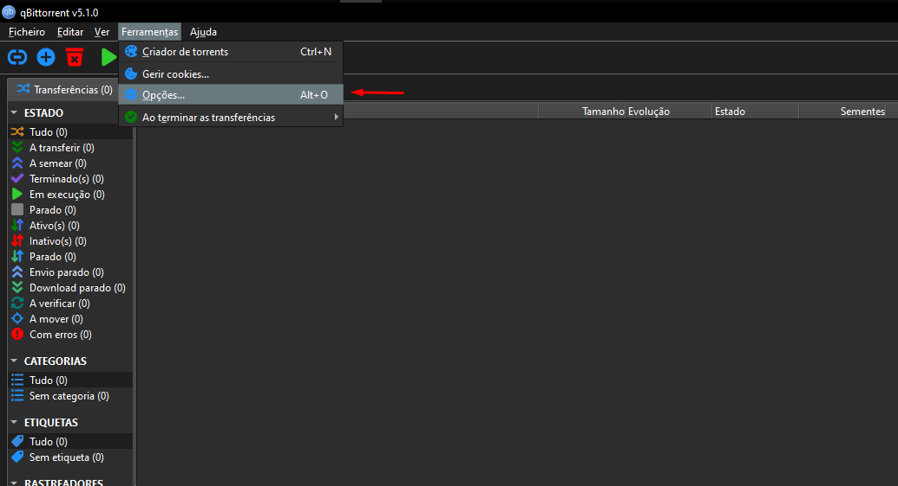
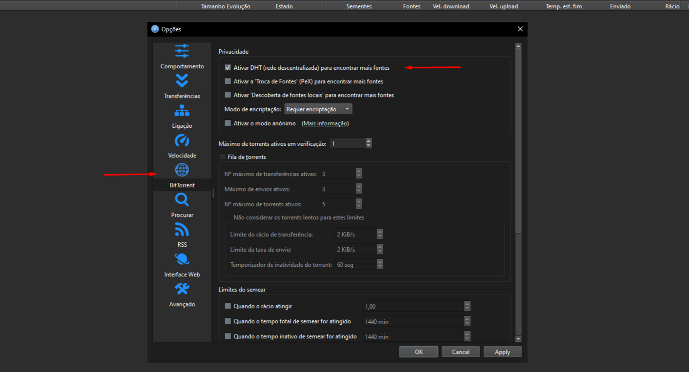
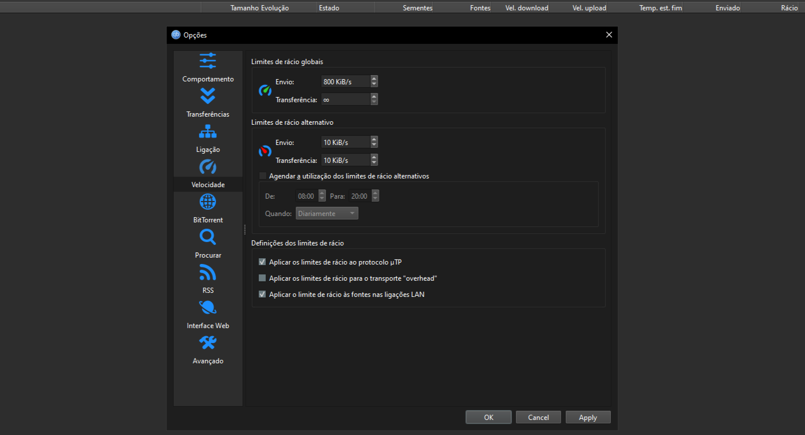
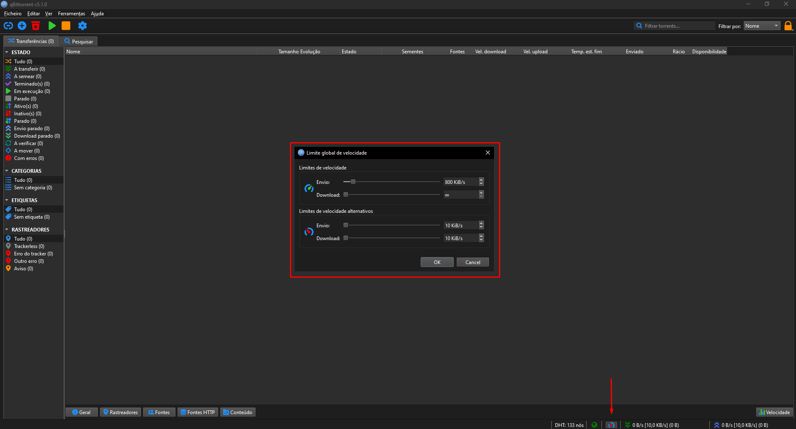
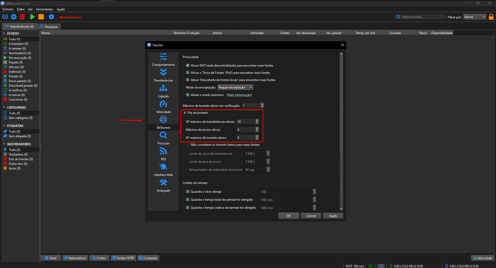

How to Configure Seeding in qBittorrent
1. Accessing qBittorrent Settings
Open qBittorrent and go to the Tools menu, then select Options. This will open the settings window where you can configure various options related to seeding.
2. Configuring BitTorrent Settings
In the Options window, click the BitTorrent tab. Make sure that “Enable Peer Exchange (PeX)”, “Enable DHT”, and “Enable Local Peer Discovery” are checked to improve connectivity and seeding efficiency.
3. Setting Seed Ratio Limits and Speeds
Still in the Options window, navigate to the Speed section. Here, you can set global and alternative seed ratio limits:
- Global Ratio Limit: Set this to
1.2(120%), so torrents stop seeding when you’ve uploaded 120% of the downloaded size. - Alternative Ratio Limit: Set this higher, like
1.5(150%), to keep seeding torrents you want to prioritize for longer.
For speed limits, you can set your upload limit to about 80% of your maximum upload bandwidth to keep your connection responsive. Download limit can usually be left unlimited.
4. Using the Speedometer Icon for Temporary Speed Control
In the bottom status bar of qBittorrent, you will find a speedometer icon. Clicking this allows you to temporarily limit upload and download speeds without changing global settings.
5. Adjusting Connections and Upload Slots
In the Options window, under the Connection tab, you can adjust the maximum number of connections globally, per torrent, and the number of upload slots per torrent. Increasing these can help improve seeding but may use more system resources.
6. Checking Seed Ratio per Torrent
You can check the current seed ratio of each torrent in the main qBittorrent window or by right-clicking a torrent and selecting Properties. Monitoring seed ratios helps you ensure torrents are seeded as desired.
Following these steps will help you efficiently manage your seeding on qBittorrent, balancing good contribution with your network performance.
Como Configurar o Semeio no qBittorrent
1. Acessando as Configurações do qBittorrent
Abra o qBittorrent e vá ao menu Ferramentas, depois selecione Opções. Isso abrirá a janela de configurações onde você pode ajustar várias opções relacionadas ao semeio.
2. Configurando as Opções de BitTorrent
Na janela de opções, clique na aba BitTorrent. Certifique-se de que as opções “Ativar Peer Exchange (PeX)”, “Habilitar DHT” e “Descoberta Local de Peers” estejam marcadas para melhorar a conectividade e eficiência do semeio.
3. Definindo Limites de Ratio e Velocidade
Ainda na janela de opções, vá para a seção Velocidade. Aqui, você pode definir limites globais e alternativos para o ratio de semeio:
- Limite Global de Ratio: Defina como
1.2(120%), para que os torrents parem de semear quando você fizer upload de 120% do tamanho baixado. - Limite Alternativo de Ratio: Defina um valor maior, como
1.5(150%), para manter o semeio dos torrents que você quer priorizar por mais tempo.
Para os limites de velocidade, você pode definir o limite de upload para cerca de 80% da sua banda máxima de upload para manter sua conexão responsiva. O limite de download normalmente pode ser deixado ilimitado.
4. Usando o Ícone do Velocímetro para Controle Temporário
Na barra inferior do qBittorrent, você encontrará um ícone de velocímetro. Clicando nele, você pode limitar temporariamente as velocidades de upload e download sem alterar as configurações globais.
5. Ajustando Conexões e Slots de Upload
Na janela de opções, na aba Conexão, você pode ajustar o número máximo de conexões globais, por torrent, e o número de slots de upload por torrent. Aumentar esses valores pode melhorar o semeio, mas pode usar mais recursos do sistema.
6. Verificando o Ratio de Semeio por Torrent
Você pode verificar o ratio de semeio atual de cada torrent na janela principal do qBittorrent ou clicando com o botão direito sobre um torrent e selecionando Propriedades. Monitorar os ratios ajuda a garantir que os torrents sejam semeados conforme desejado.
Seguindo esses passos você vai gerenciar eficientemente seu semeio no qBittorrent, equilibrando boa contribuição com o desempenho da sua rede.